Festival de Somain

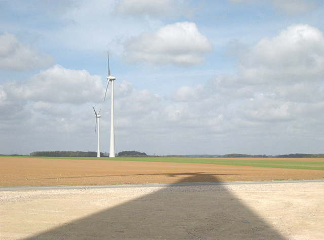
Somain, c'est pas très grand. Pour situer, c'est vers Valenciennes, au nord de Cambrai. Un peu de tourisme, en route, arrêt au pied d'éoliennes toutes neuves.

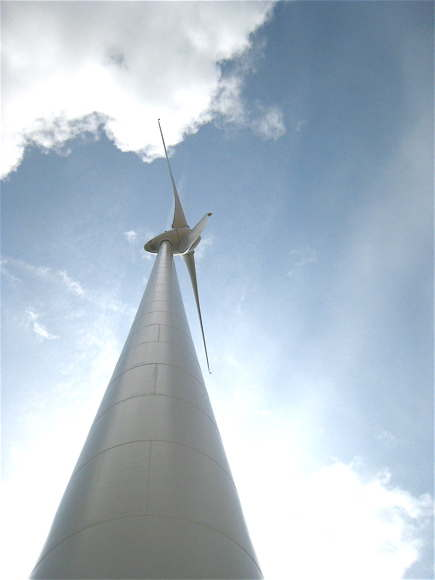
Impressionnant, plus que sur la photo, quand on est au pied et dominé par la machine !

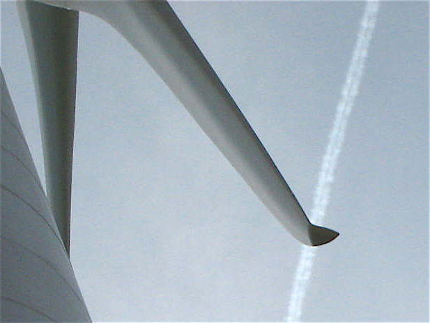
Elles sont très silencieuses. D'accord le mât est haut, mais c'est aussi sans doute à cause des profils complexes et du bout de pale très travaillé...

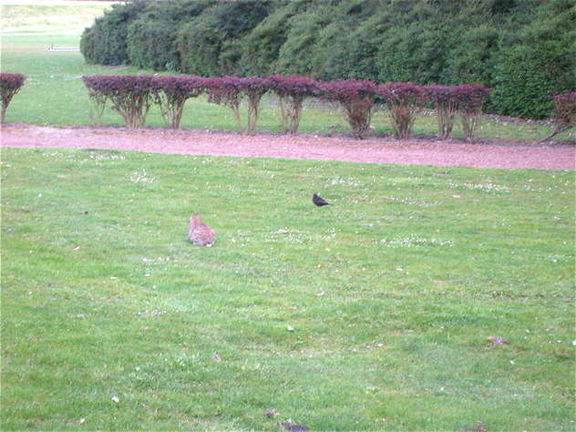
Arrivée à Somain. On retrouve avec plaisir le parc Anne Franck, si verdoyant et calme hors des heures ouvrables. Les myriades de lapins ressortent des terriers cachés sous les buis de la colline dès que j'arrête le moteur ! Et les canards et les oies se promènent en bande au bord du lac, hanté pourtant la nuit par les pêcheurs de carpes sous leurs tentes vertes...

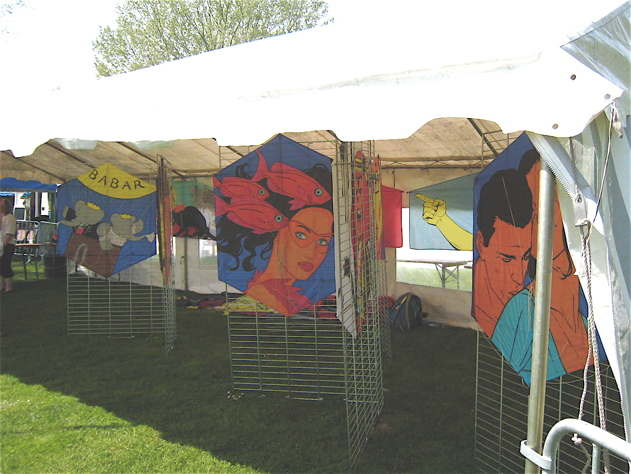
Olivier a apporté de Suisse son exposition de cerfs-volants en appliqué, extraits de BDs recadrés ! Le travail est d'une grande complexité, chaque trait est un fragment cousu. Et les bannières sont à deux faces, aux couleurs assez différentes !

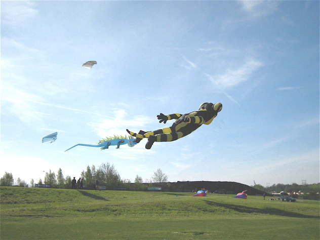
Le grand machin jaune et noir a pris son vol. Fabian nous précise que c'est l'équivalent de Oui-Oui. Mais je ne sais pas qui est Oui-Oui, alors je me replie dans mon ignorance crasse ! Après recherche sur le Net, c'est un petit personnage genre Pinocchio, mais tout doux à toucher, pour les tout-petits...

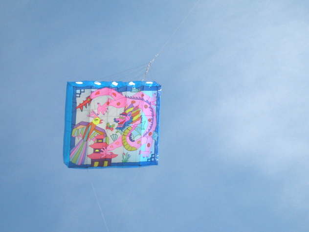
Gérard Rosenblatt a lancé encore son gonflable plat, bien stable avec sa queue, et très favorable à la présentation d'une déco grâce à l'absence de quilles.

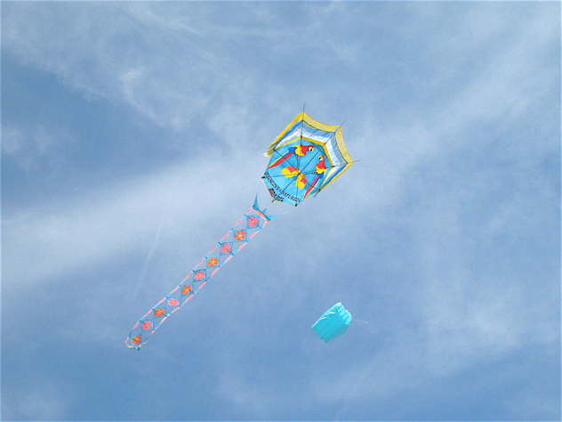
Les Brésiliens sont là, avec un CV pour la préservation de leurs réserves naturelles. Ils ont du mérite, ils sont arrivés hier soir de Chine et repartent lundi pour le Brésil !

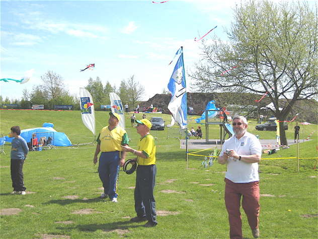
Ils sont deux, avec leur costume aux couleurs de leur drapeau, Ordem y Progresso... Je ne connais pas le plus mince, mais Ezéchiel (d'habitude accompagné de Juanita) est un habitué des festivals français.

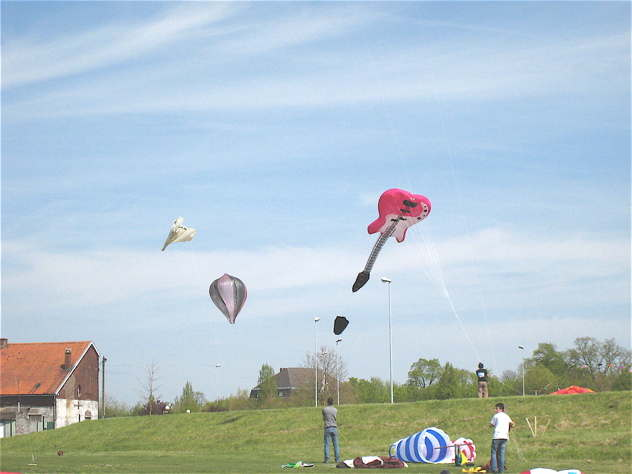
Les CarnetdeVol ont fait connaître leurs énormes montgolfières de papier (40 m de haut !). Mais Ezéchiel sait aussi faire des ballons solaires en plastique tout fin... Il vogue, sous le flow-form de Beauce en perdition et une guitare qu'on verra sûrement à Dieppe, mais il montera beaucoup plus haut !

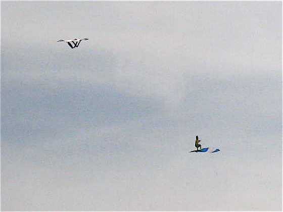
Ezéchiel a aussi des Pipas combattants comme d'habitude. Mais il a créé ce surfeur des vents beaucoup plus grand et qu'il pilote de même...

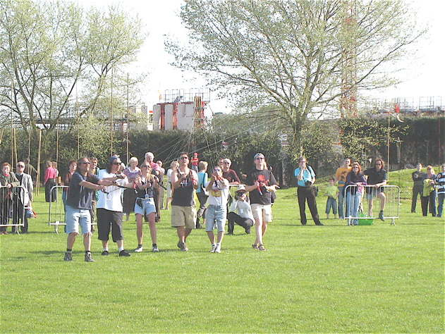
Je vous ai déjà montré les voiles du team Pirates-Gwenn, voilà les pilotes, qui refont leur show pour Christian...

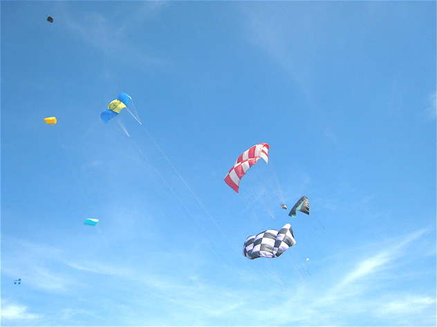
Maintenant, les Grosses Voiles, de William et sa bande...

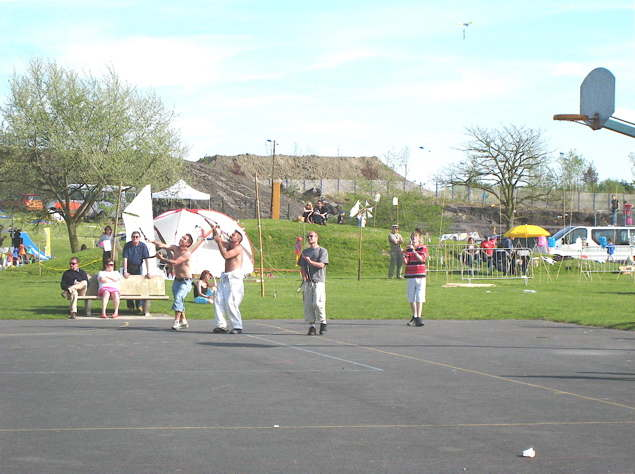
Les pilotes des grosses, dans leur exhibition plus improvisée...

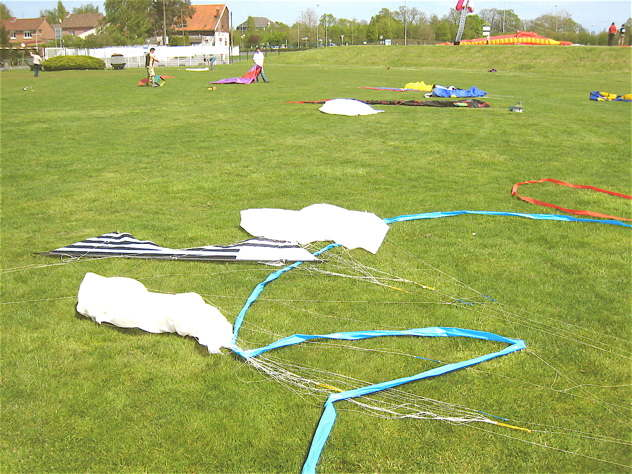
Apparemment, les Pirates ont pris leurs voiles dans la queue d'un monofil et dans un Révo, et ont tout jeté par terre !

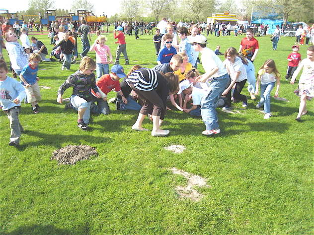
Sur le terrain de foot, lâchers de bonbons musclés, avec 3 navettes qui larguent des kilos par des procédés divers...

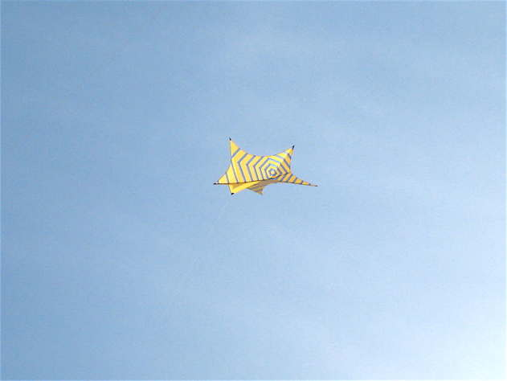
Au-dessus, ce Jimmy-Pentagon très travaillé, orné... d'hexagones !

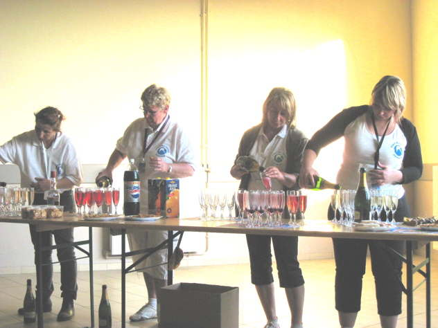
Samedi soir, on a changé de salle, il n'y a plus la moitié des convives qui ont le soleil dans les yeux. Mais l'accueil et la chère sont toujours aussi bons : après le pot du Maire, un deuxième pot privé pour attendre l'entrée...

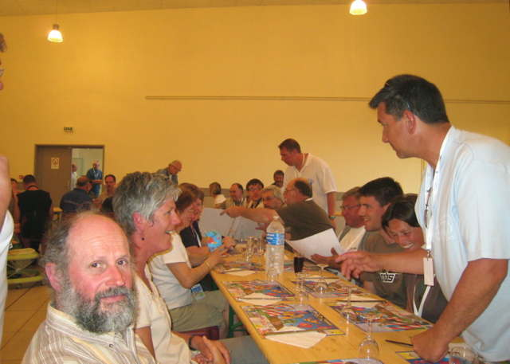
Au menu : Tartiflette, très bonne et vite avalée ! Et il y a de magnifiques napperons à l'effigie du festival...

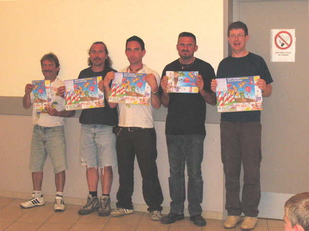
Au dessert, les Pirates-Gwenn posent comme les Dalton pour les photos d'identité. D'abord côté face...

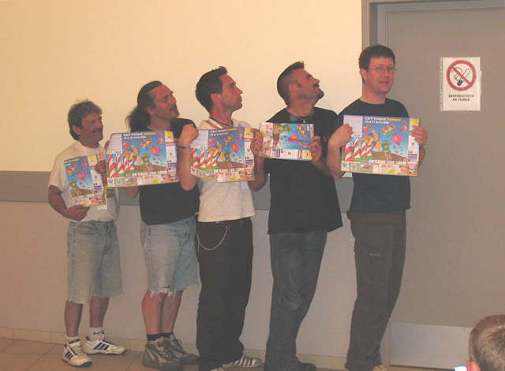
Ensuite, côté profil...

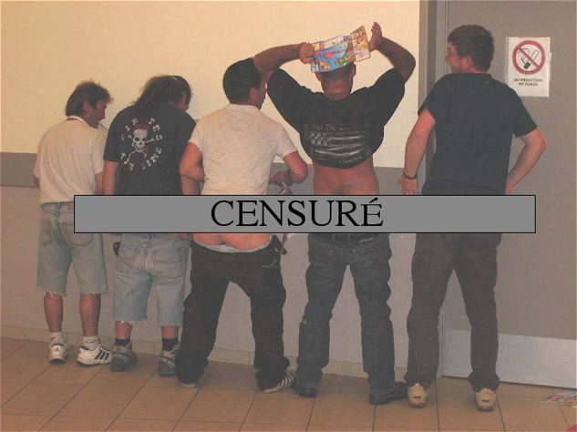
Enfin côté pile...

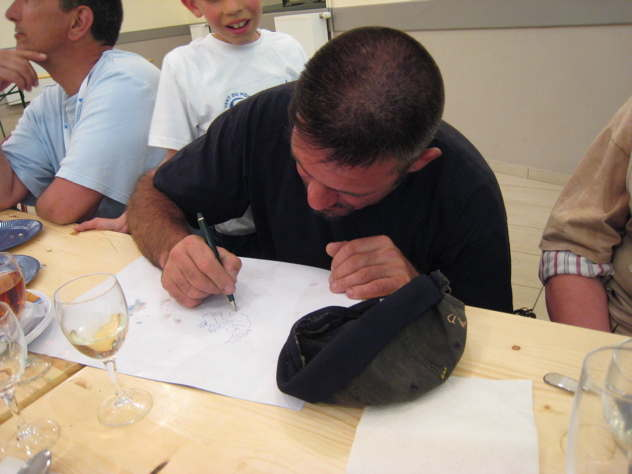
William se rattrape en dessinant, de sa patte inimitable... son sujet favori, des cervolistes sur leurs buggies...

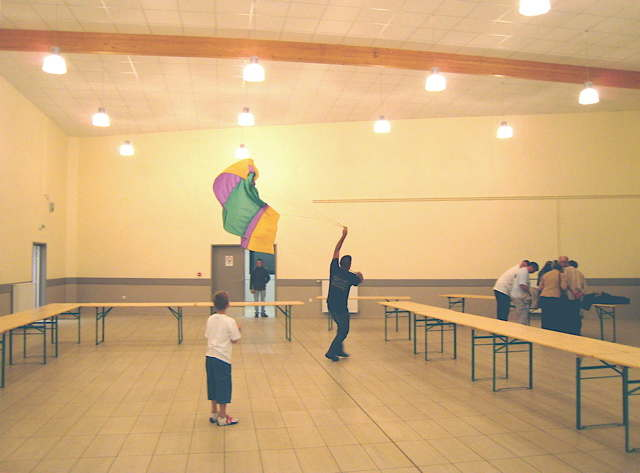
Il fera aussi, quand on aura tout débarrassé et rangé, un peu d'indoor avec une voile de traction ! Mais il faudrait un peu plus de place !

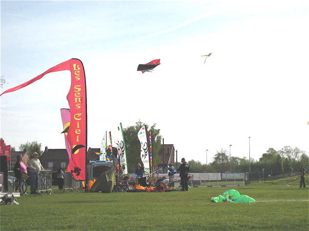
Les Sens Ciel ont monté leur camp à côté de celui des Hurricane et mettront sans cesse du matériel en l'air en fonction de la force du vent...

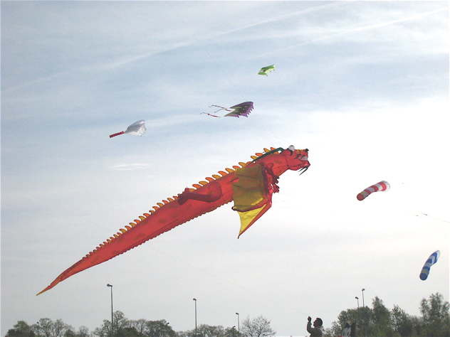
Le dragon lui-même, vu de profil cette fois pour que vous le détailliez bien...

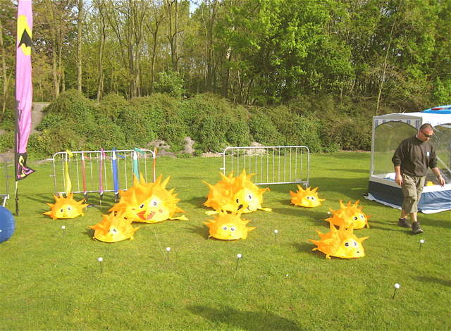
Le grand Hérisson n'a pas quitté terre, mais il a enfanté une pléiade de petits clones au sol.

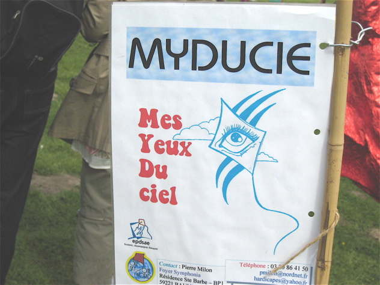
Myducie, une organisation du coin, qui s'occupe de handicapés pour montrer et développer leurs possibilités artistiques avait apporté ses Jardins très variés.

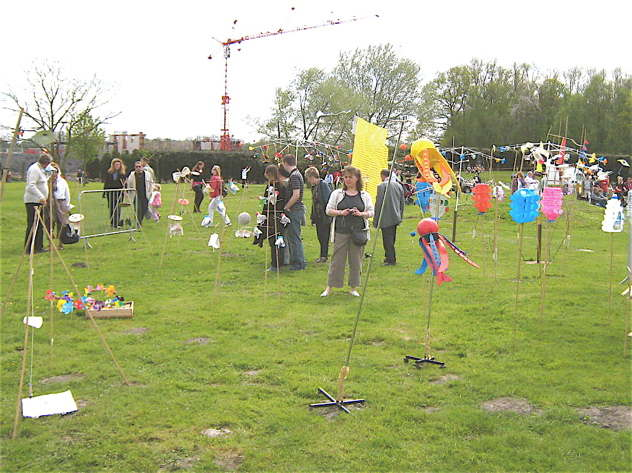
Voilà leurs jardins, des instruments sonores, de grosses bouteilles qui tournent (faudra soigner les pivots), des parasols sans toile mais enrichis d'objets divers !

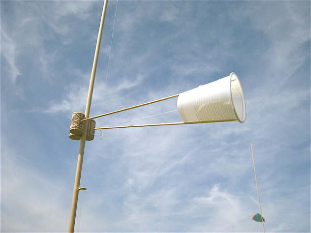
Un exemple de système sonore simple et efficace : un fil vertical que le vent fait vibrer, un tendeur au fond d'un gobelet qui sert de membrane amplificatrice...

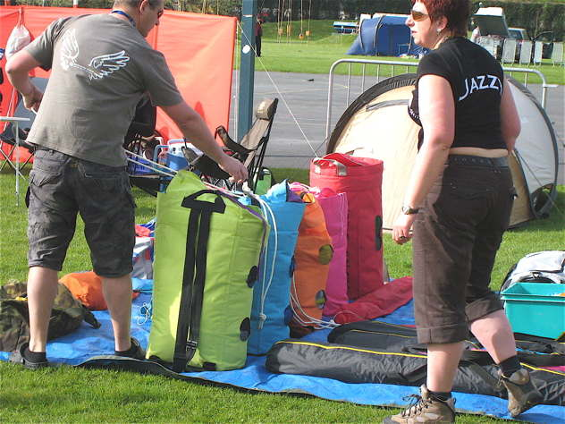
L'équipe Didakites est arrivée avec des sacs bourrés de merveilles qu'on a hâte de voir déployées !...

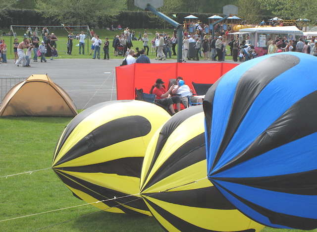
Ces gros Chiens de Plage (ici, de Prairie !) bondissent sans arrêt, ils pourraient bien être aussi à Didak...

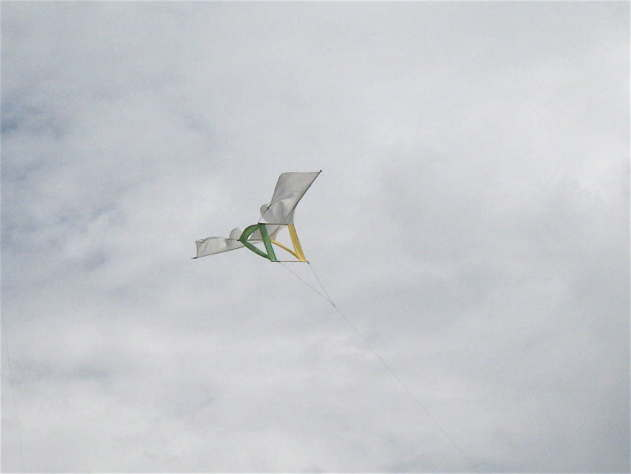
Ce CV de la famille Conyne mais à aile droite et avec de longs triangles, a bien du mal à garder sa forme dans le vent puissant et houleux, mais reste toujours en l'air !

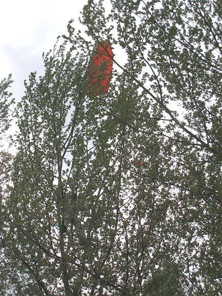
François a mis en l'air son V13 hérité de Georges Rivals, mais dans le tumulte, il s'est déventé et a plongé dans les arbres du tertre central. On essaie de le soulever avec un Delta-Vapeur, puis je monte dans l'arbre, mais je mollis avant le haut. William monte 2 fourches plus haut que moi (voir photo) mais s'arrête aussi. Finalement, il se décroche tout seul et repart dans les arbres d'en face, moins hauts heureusement...

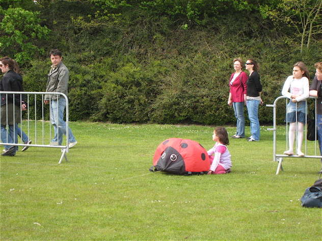
Pendant ce temps, au sol, ma coccinelle s'est fait une amie...

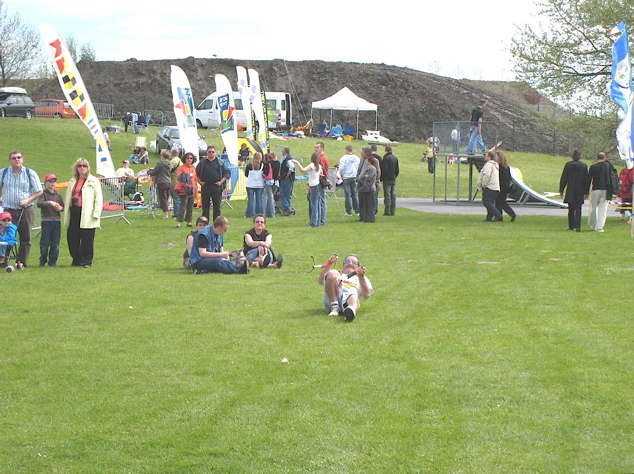
Avec le vent d'aujourd'hui, Michel se fait traîner sur la pelouse, avec pourtant sa petite voile !...

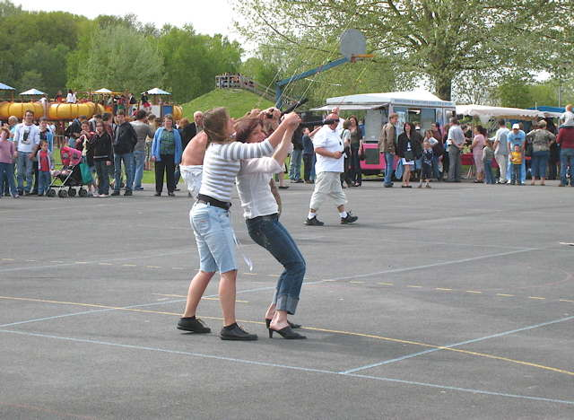
Ecole de Traction. Gaëlle a une cliente pas très bien équipée en chaussures pour ce sport !

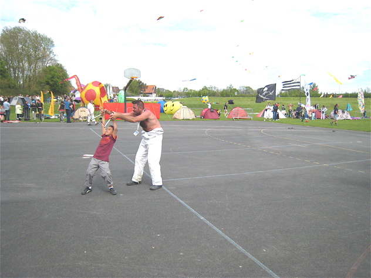
William préfère les jeunes femmes, mais peut même abandonner les poignées si le client a l'air de se débrouiller à peu près...

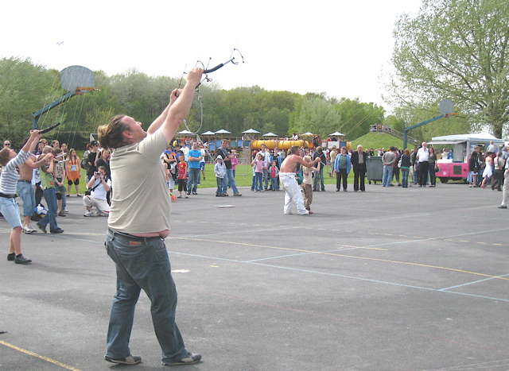
Certains ont l'air de posséder déjà la technique...

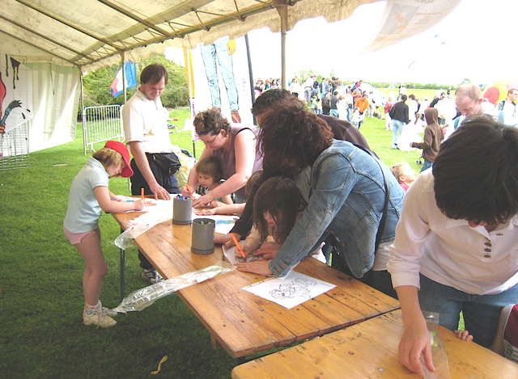
Sous un barnum, il y a aussi un atelier pour les enfants, où décorer des Eddies, avec des couleurs et selon des calques prévus spécialement... si on veut !

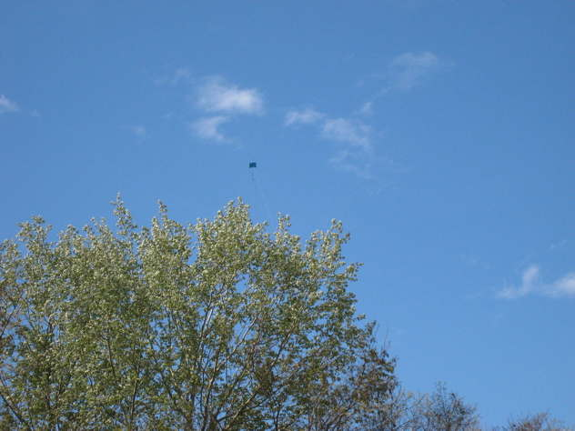
François s'est éloigné pour ne pas être accroché par les deltas de Hurricane (de toute façon, ils s'accrochent entre eux et tombent au loin...) ! Il fait de la photo et de la video sous son carré, toujours stable avec sa longue queue.

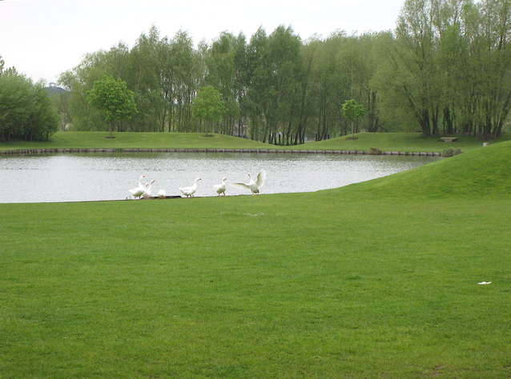
Une dernière nuit dans le parc, et au petit matin, il fait relativement beau, je vais faire du tourisme en rentrant. Un petit tour pour dire adieu aux oies...

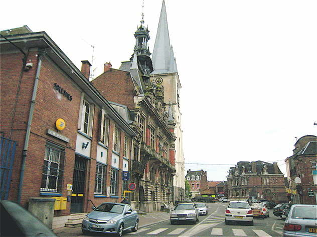
Je prends les petites routes pour traverser les bourgs du Cateau-Cambresis et voir leurs maisons de ville et leurs beffrois...

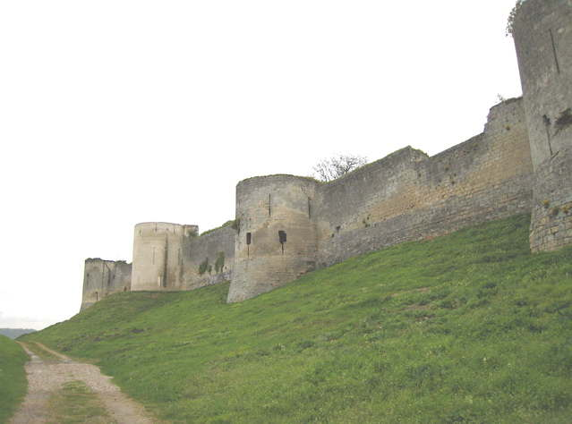
Avant le déjeuner, un petit arrêt au château de Coucy, vraiment impressionnant. J'en fais le tour par le chemin de ronde bien aménagé !...

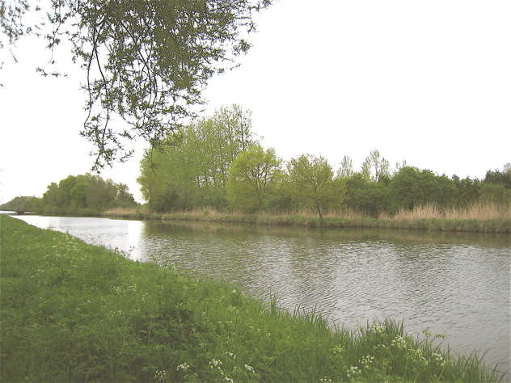
A 12h30, arrêt-buffet au bord du canal de Saint-Quentin que vous connaissez, bien sûr : il relie la Somme à l'Oise. Calme et romantique avec une petite pluie qui fait des plics dans l'eau et un poisson qui saute. En deux heures, je verrai passer... UN bateau !
Somain : Du vent cette année, et pas de canicule, quelques coups de soleil quand même. Et toujours un accueil généreux de la famille Tozzo et de leurs associés.
Annonce perso (ter et der... pour cette année) : J'ai gagné au combat de rokkaku de Chatelaillon une nuit d'hôtel + petit-déj. (2 étoiles) pour deux personnes pour le prochain festival, et je ne sais qu'en faire, j'aurais préféré une coupe ! Si cela vous intéresse, contactez-moi, elle ira à la meilleure ou la plus rapide des offres raisonnables ou pas.